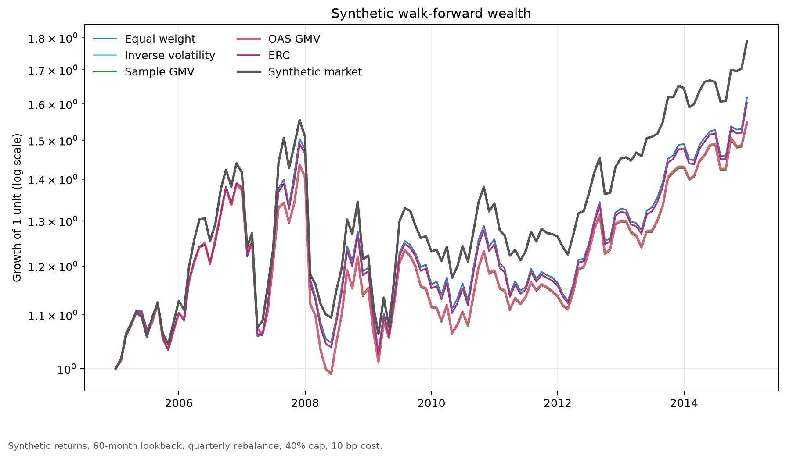
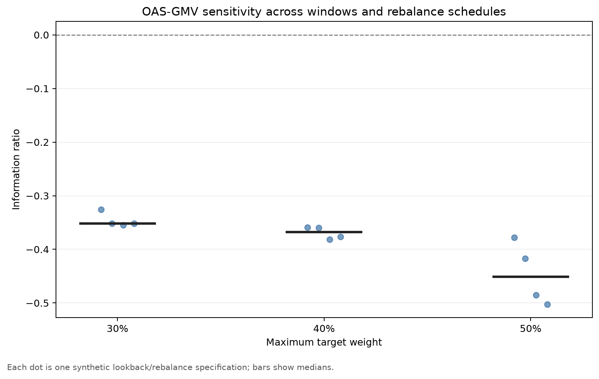

Robust Developed-Market Factor Allocation
Python project comparing allocation rules across four DM factors, including lagged walk-forward tests, costs, robustness checks and a synthetic demo.
Research question
How much allocation complexity survives a fair walk-forward test?
The project compares five portfolio rules across four long-only factor-index sleeves. It asks whether covariance-aware methods add stable risk control relative to transparent baselines once inputs are estimated only from past data, allocations are constrained and turnover costs are deducted.
The final universe contains MSCI World Enhanced Value, MSCI World Momentum, MSCI World Quality and MSCI World Small Cap. MSCI World is the broad-market benchmark and is not included in the optimizer.
Research design
A historical walk-forward evaluation
Portfolio weights are estimated from observations available through month t and first applied to the return in month t + 1. This prevents direct look-ahead. The exercise remains historical and pseudo-out-of-sample because the full dataset was available while the research design was developed.
The main specification uses a ten-year trailing window, quarterly rebalancing, long-only fully invested portfolios, a 40% maximum sleeve weight and 10 basis points of one-way turnover cost.
- Universe
- MSCI World Enhanced Value, MSCI World Momentum, MSCI World Quality and MSCI World Small Cap
- Benchmark
- MSCI World, excluded from the allocation universe
- Estimation
- 120 trailing months with a one-month application lag
- Constraints
- Long-only, fully invested and capped at 40% per factor
- Rebalancing
- Quarterly, with costs charged against drifted pre-trade weights
- Robustness grid
- OAS-GMV across 60- and 120-month windows, monthly, quarterly and annual rebalancing, and 30%, 40% and 50% caps; a separate check varies costs from 0 to 10 and 25 basis points
Allocation methods
Simple rules alongside covariance-based portfolios
The comparison deliberately includes transparent baselines. This makes it possible to judge whether the additional estimation and optimization steps provide a stable improvement or merely fit a particular historical sample.
- Equal Weight
- A 1/N allocation that requires no estimated risk inputs
- Inverse Volatility
- Allocates less to factors with higher standalone volatility
- Sample GMV
- Minimizes portfolio variance using the sample covariance matrix
- OAS-shrinkage GMV
- Uses Oracle Approximating Shrinkage to regularize the covariance estimate
- Equal Risk Contribution
- Balances the estimated risk contribution of the factors
Implementation
A reproducible Python workflow
The implementation separates reusable package code from four research notebooks. Data validation, covariance estimation, optimization, walk-forward accounting, inference and performance metrics live in focused Python modules; the notebooks document the sequence from data preparation to robustness analysis.
- Checks for duplicate dates, missing months and invalid return values
- Explicit one-month lag to prevent direct look-ahead
- Turnover measured against drifted pre-trade weights, with costs applied at rebalancing dates after inception
- Capped-simplex optimization with explicit convergence and feasibility checks
- Automated unit and integration tests covering constraints, metrics, timing and the demo
- A fixed-seed synthetic command-line demo that exercises the same backtest path without licensed inputs
Synthetic demo
An end-to-end backtest demo, without licensed market data
The repository includes a deterministic example that generates 180 synthetic monthly returns, runs all five portfolio methods through the package's backtest code and writes two CSV tables plus the two charts below. It is a reproducibility and implementation check—not a performance estimate.
python -m pip install -e .
python -m robust_dm_factor_allocation.demo --output-dir results/demo- Fixed seed: 19
- 180 synthetic months
- Five allocation rules
- Two charts + two CSV files


Evidence boundary
What these visuals do—and do not—show
Both figures use fixed-seed synthetic returns. Their rankings and metric values are properties of this generated sample; they demonstrate timing, accounting, optimization and export behavior, but they are not evidence of investable performance.
The empirical notebooks use licensed MSCI index files. Those source files, processed returns and MSCI-derived tables, figures and portfolio weights are intentionally not published. Parts of the Momentum and Quality histories were backtested by the index provider, and the research choices were made with the available history already known.
The study is a historical comparison rather than a trading-ready strategy. It simplifies costs and leaves out taxes, market impact, fund fees and practical implementation limits.
The project repository keeps generated result files local and untracked. The two selected copies above are published only as portfolio-site previews and contain synthetic data; MSCI-based results remain local and are not reproduced here. This is an independent research project, not investment advice, and is not sponsored, endorsed or reviewed by MSCI.